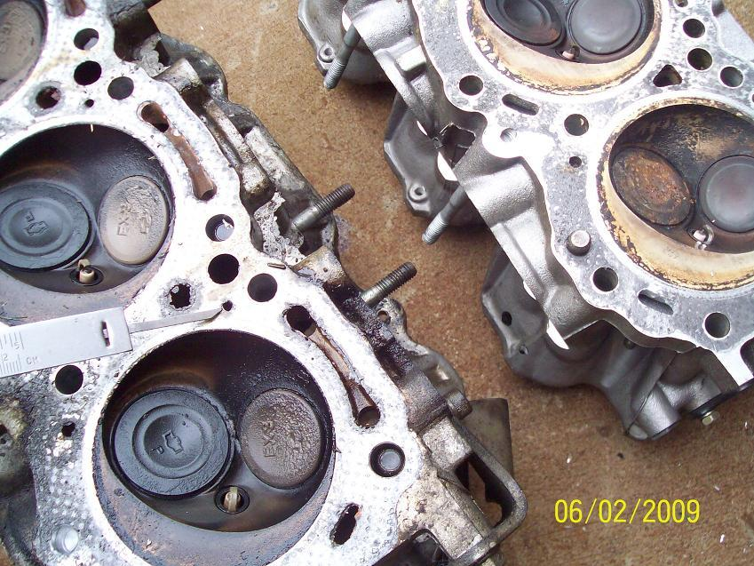

-
So I would need the bore size…88mm (vg 30 .04 over), and what the volume cc is of the VG33 heads and finally the piston stroke length for these motors. Anyone have that on hand?Usual Z31 suspect: Garage Queen (aka broken)

-
83mm stroke. vg33 head should have same (or very close) 55cc combustion chamber volume as the vg30e heads, presuming it's with stock valve sizes (which change the combustion chamber volume by a couple of cc) -
Also need piston depth in bore, and head gasket thickness. Lots of numbers to aggregate. -
1mm oversize valves…thought the vg30e heads were 52cc?
Head gasket thickness 1.13 or 1.29mm (the whole reason I'm trying to calc out CR). Piston depth I have to find out. I think that's really all I'm missing right now is piston values and a confirmation on cylinder head cc.Usual Z31 suspect: Garage Queen (aka broken)
-
i think you mean deck height?Donr1494;342784 wrote: Also need piston depth in bore, and head gasket thickness. Lots of numbers to aggregate.
the term "depth" is not to be interchanged or used in place of the measurement for deck height because some motors (many nissans) have pistons that are "proud" of (over) the deck height, and some are "shy" of (under) the deck. And since there is no such thing as "negative depth", the term is called "deck height" and it's given in a positive/negative number depending on where the crown of the piston sits in relation to the deck.
he already knows his piston dish/dome volume, and his head-gasket compressed thickness should be mentioned in the FSM, or he has measured a previous gasket, the headgasket bore size is compatible with .060 over pistons, so it should be somewhere around 88.5 or 89mm, and the other two parameters he asked for… so he has all he needs to calculate CR. not very many numbers to aggregate at all, really. -
why not test the cc's of your heads? are they on the motor yet? all you need is a graduated cylinder/beaker and playdoh. -
They are at the machine shop and I don't feel like paying them more money. It's also a hassle for me to go over there as I have to take time off work.Usual Z31 suspect: Garage Queen (aka broken)
-
well if your heads were decked or your valves were changed your numbers are going to be different from any ones that someone else gives ya, so… maybe you can have a buddy go get one of your heads for you? -
So here's where I'm at.
Gasket bore 88.254 mm (88+.01" clearance), 1.29mm thickness (.051), piston 88mm bore (-.004 max for PTW clearance, not a big difference), pin height 32mm, rod length 154.2 and stroke 83 (both stock numbers I'm using, but they are scat rods for VG30 so should be the same). Head was decked .004 thousands which equates to .1mm. Using a 55cc cylinder head volume I'm at 9.29:1 (subtracting .1mm out of the head gasket thickness in the calculator) and at 56cc I'm at 9.15:1. I think I have to go with 1.29 (.051") as the .045 (1.13mm) would be wayyy to high compression.
Found a second link confirming 55cc on 85e heads.
This way I should sit around 9:1 to 9.2:1Usual Z31 suspect: Garage Queen (aka broken)
-
Yeah approximately 54.8 cc combustion chamber on 9:1 vg30e.
You're using a vg30 with vg33 heads? what's your setup?
Stock 9.0:1 vg33e combustion chamber is 60.64 cc.
But if you head is decked or the valves are thicker then none of these calculations really matter. -
Vg30 block with VG33 heads. People say the heads are exactly the same, which means combustion chamber has to be the same too. I calc'd in the amount the heads were decked and subtracted it from gasket thickness. Valves are +1mm, which probably equates to a bump of 1cc-1.5cc's. I think I'm good. Thanks guys.Usual Z31 suspect: Garage Queen (aka broken)
-
If they have the same stroke and compression but vg33 has a larger bore, how could they have the same CC volume?
Only way I can think of is bigger piston dome I guess. -
I'm not sure, that's why I ask. If it's bigger then great my compression will sit a little lower and I will be happy. The question is how much do you think 1mm oversized valves will increase the head cc by.Usual Z31 suspect: Garage Queen (aka broken)
-
piston dome doesn't have anything to do with the cc volume of the head. mainly because the piston is the piston, and the head is the head, but also because if you look at a vg33 piston, there is no dome. there is actually a center dish and two valve reliefs.Big Slappy Z;342813 wrote: If they have the same stroke and compression but vg33 has a larger bore, how could they have the same CC volume?
Only way I can think of is bigger piston dome I guess.
theoretically, as long as the quench pads fall within the bore diameter, the head volume doesn't have to change. this could let you use a vg30 head on a vg33 motor. I haven't tried - so I don't know… But i would get my heads back and check the volume because this picture here shows what may be a slight difference in combustion chamber's edge shape so that the chamber gets as close to the firing ring as possible.

now a couple of things. one 9.5:1 is not "waaaaaaaay to high". and 9.2 isn't that far off from 9.5:1. neither is 9:1. if you use good gas or e85 then it prob won't make a huge difference. i'm not sure what your gas is like over there.
and more importantly. lay your gaskets on your head before you go any further because at this point if your combustion chambers overlap the gasket area, then you're fucked and you have 1 of 3 options:
1) weld heads, reshape, and buy super thin gaskets
2) get new heads worked on for vg30
3) get new block worked on for vg33.
surprised you didn't check this BEFORE building the motor -
According to everyone and there mother, VG33 heads work on a VG30 motor. They look like they are fine and will sit fine as they are pretty identical except for water ports and exhaust studs and throats.Usual Z31 suspect: Garage Queen (aka broken)

Copyright © 2006–. All rights reserved. Privacy Policy